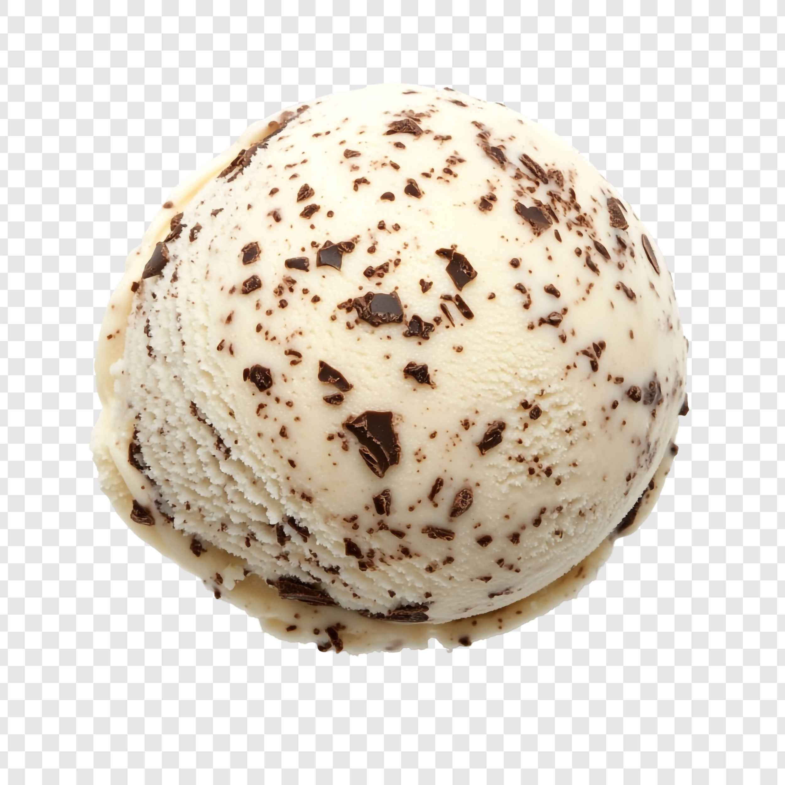
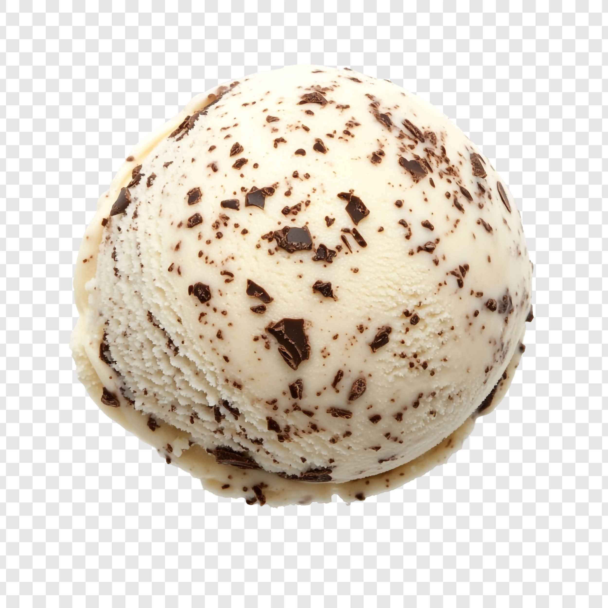
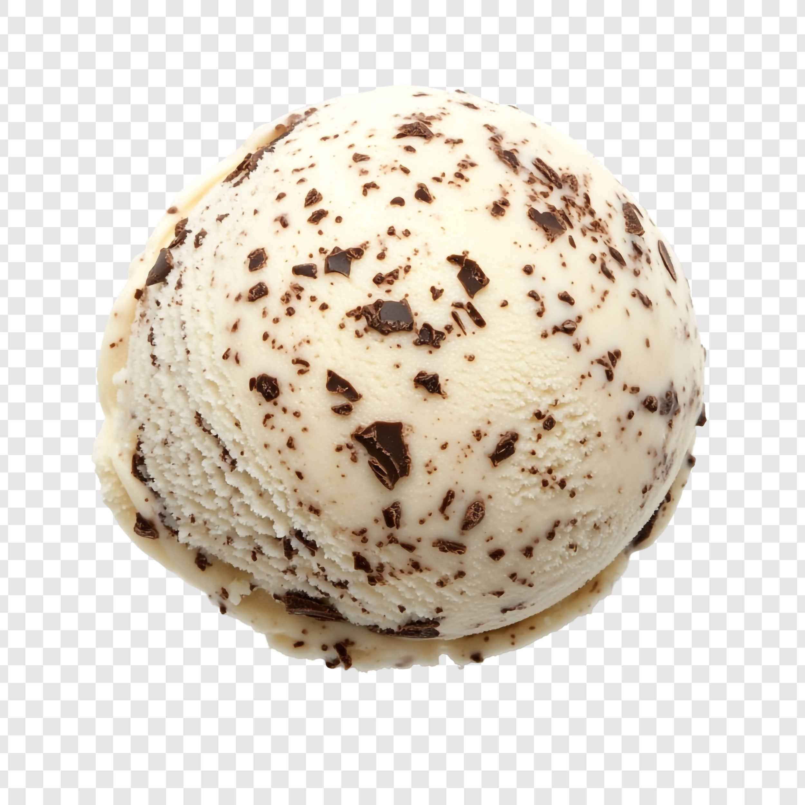

Our house made, all natural artisan ice-cream
 



Our house made, all natural artisan ice-cream

Embracing the same whole foods philosophy as our pizza, Little Scoops ice-cream is crafted using only Bannister Down's Ethical Dairy and natural ingredients. Every scoop is 100% free from artificial colours, flavourings, & preservatives.
With a wide range of flavours changing week to week, as well as dairy free and vegan options available, there's a Little Scoops for everyone. From Fig Leaf & Butterscotch, to Buttered Corn & Caramel, and of course our take on classics like Choc Milk & Cookie, our ice-cream is crafted to delight. It often has fans big and small visiting Slowdough just for a scoop.
Our Little Scoops ice cream is available is cones, cups, and 500ml take-away tubs from our Willagee restaurant. It's available in 500ml take-away tubs only from Clarkson restaurant.